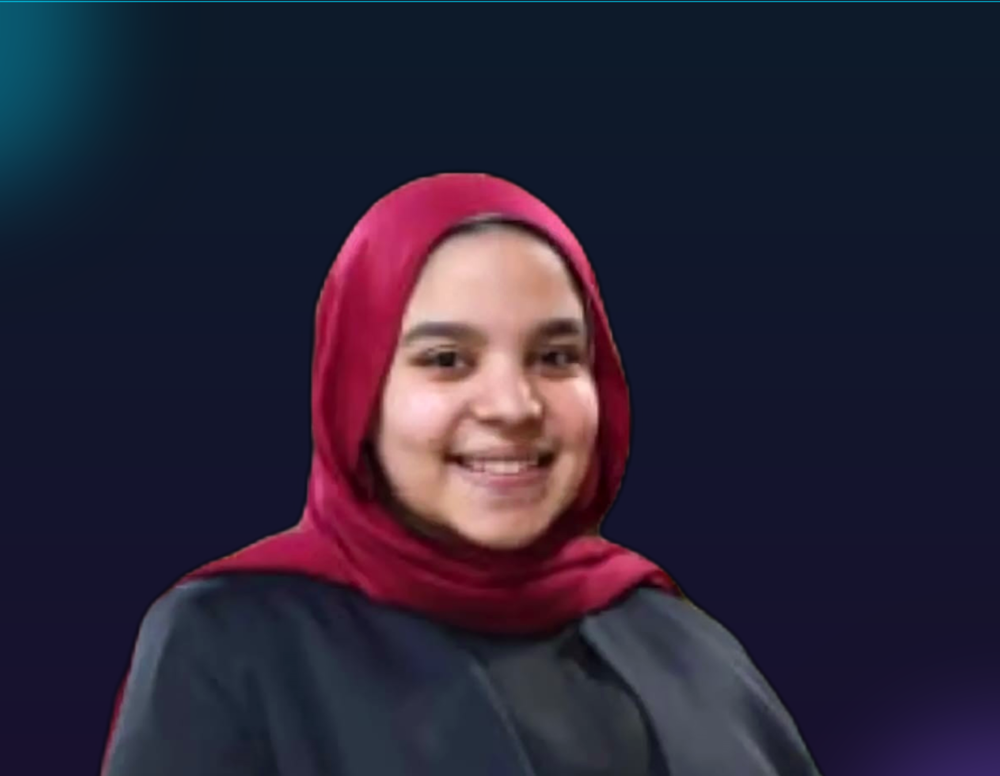
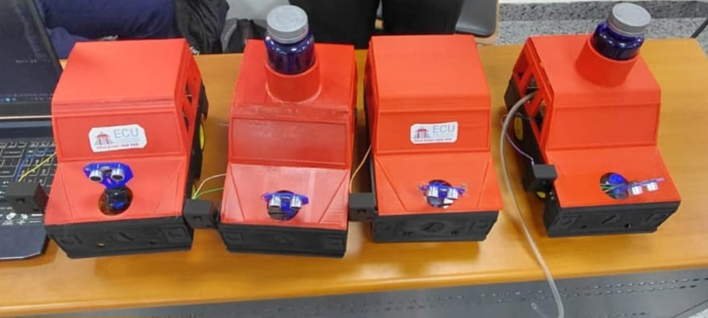
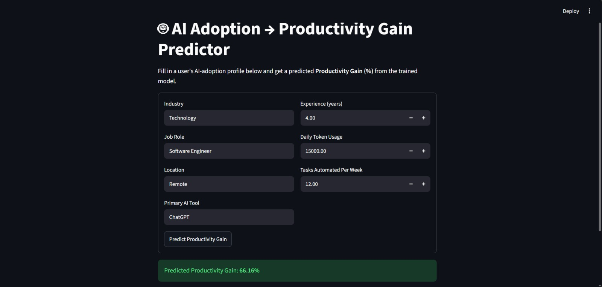
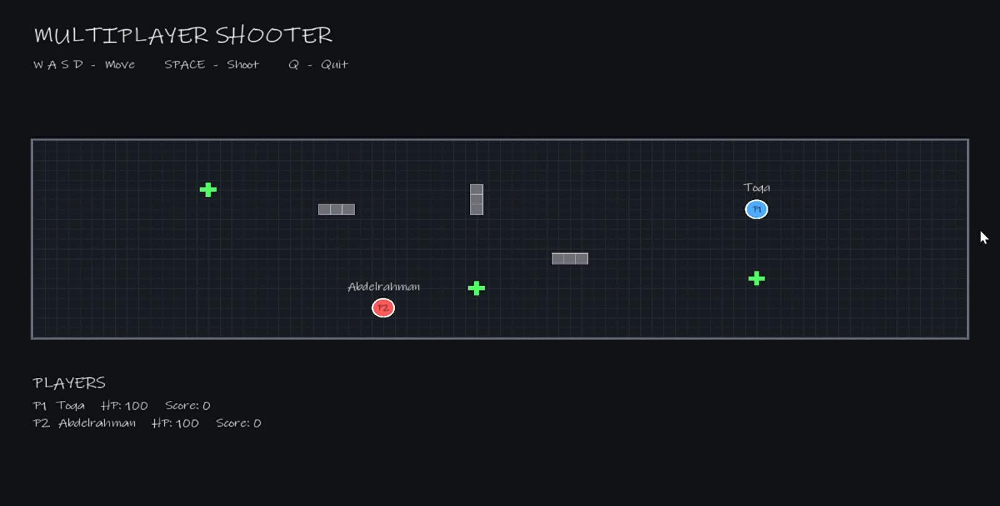

Hello, I'm
I'm passionate about Artificial Intelligence, Machine Learning, and Data Science, with a focus on turning data into intelligent and practical solutions. I enjoy building machine learning applications, working with data, and developing software using Python, SQL, and C++.

I'm a Computer Science student at the Egyptian Chinese University with a strong interest in Artificial Intelligence, Machine Learning, and Data Science.
I've gained hands-on experience working with data, building and evaluating machine learning models, and developing practical applications using Python, Pandas, NumPy, Scikit-learn, FastAPI, and Streamlit. I'm also developing my skills in SQL for working with and analyzing structured data.
I also have a solid foundation in C++ and Object-Oriented Programming, with experience applying programming, problem-solving, and software development concepts through academic projects.
My academic projects have given me the opportunity to work across different areas of computer science, including machine learning, software development, robotics, and embedded systems.
I'm continuously learning and building practical projects, with a focus on developing my technical skills and creating useful solutions to real-world problems.
Programming and data-focused development using Python.
Cleaning, transforming, and preparing datasets for analysis.
Analyzing datasets to identify patterns, trends, and insights.
Creating clear visualizations using Python data-science tools.
Building supervised machine-learning models for prediction and classification.
Preparing and transforming features to improve model performance.
Evaluating and comparing machine-learning models using appropriate metrics.
Working with relational databases and SQL queries.
Creating interactive data and machine-learning web applications.
Building APIs for machine-learning and Python applications.
Version control and project collaboration using Git and GitHub.
Working with Excel, Word, and PowerPoint for academic and professional tasks.

Collaborative university project involving four robotic vehicles designed to detect and extinguish fires. I contributed to the fire-detection vehicle.
Contributed to a four-vehicle robotic system designed for fire detection and extinguishing, with a focus on the fire-detection vehicle and sensor integration.

Machine Learning web application that predicts productivity gain using employee and AI adoption data. The application uses a trained Random Forest model and is deployed with FastAPI and Streamlit.
The Random Forest model achieved an R² score of 0.8883, with an MAE of 2.7241 and RMSE of 3.9586.
End-to-end classification project including preprocessing, exploratory data analysis, feature engineering, model comparison, and evaluation using Scikit-learn.
Completed an end-to-end classification workflow covering preprocessing, exploratory data analysis, feature engineering, model comparison, and evaluation.

Multiplayer shooter developed in C++ using Object-Oriented Programming (OOP) and a client-server architecture. Upgraded from a console-based client to a graphical interface using SFML.
Supports multiple players connected to the same server, with player movement, shooting, health and score tracking, bullets, power-ups, and obstacles.
What I Built:Implemented the graphical client while keeping the existing server unchanged. The server maintains the authoritative game state and communicates with clients over TCP, allowing players to connect from separate computers on the same network.
Console-based management system built with C++ using Object-Oriented Programming principles.
Built a functional library-management application demonstrating object-oriented programming, data management, and system design.
Completed a 120-hour training program covering Machine Learning, data science, model development, and freelancing. Achieved a final score of 94% and completed an end-to-end machine-learning deployment project.
Developing practical skills in Artificial Intelligence, Data Science, Machine Learning, data analysis, and Python-based applications.
Participated in a program covering banking fundamentals and Generative AI applications.
Participated in student technology activities and collaborative learning opportunities.
Practiced competitive programming and problem-solving as part of the university ICPC community.
Passed the preliminary stage of the Huawei ICT Competition.
National Telecommunication Institute (NTI) • 2026
120 Hours • Final Score: 94%Commercial International Bank (CIB) • 2026
Generative AI & Banking FundamentalsOracle • 2026
Artificial Intelligence Learning Badge